Introduction
The objective of this experiment is to measure the heights of objects passing through a garage door using a TI mmWave Sensor EVM. This experiment was performed in a home garage and we measured the height of vehicles and humans passing underneath the sensor while entering the garage.
Setup
The setup for this experiment can be divided into two parts, namely physical setup and software setup. These are detailed below:
Physical Setup
The physical setup includes information about the scene such as the distance between the target and the sensor antenna, the type of target used, hardware setup and any other physical considerations e.g. non-reflective surfaces or use of anechoic chamber etc. The physical setup used for this experiment is given below:
- This experiment was performed in a home garage.
- An IWR1443 EVM was mounted at the entrance of the garage door as shown in the picture below.
- The EVM was attached to acrylic glass with standoff screws.
The acrylic glass mount was attached to the garage ceiling with double-sided mounting tape.


- We measured the heights of 3 different vehicles and 1 person.
- 2017 Honda Civic SI Sedan
- 2017 Mazda 3 Sedan
- Nissan Murano SUV
- An Adult
- The above targets were placed vertically under the radar one by one.
- The vertical distance between the IWR1443 EVM and the highest point of the target was measured with the mmWave Demo Visualizer.
Next, the vertical distance between the IWR1443 EVM and the highest point of the target was measured with a tape measure for comparison.
Software setup
- The IWR1443 EVM was running the mmWave SDK Out-of-Box Demo.
- The IWR1443 EVM was connected to a Windows laptop running the mmWave Demo Visualizer.
- The custom configuration is based on the "Best Range Resolution" configuration available in the visualizer, with the below modifications: garage_door_cfg.cfg.
- CFAR parameters were tuned to reduce clutter.
- The calibDcRangeSig command was added to remove the DC peak seen in the Range FFT. This peak is a result of the Antenna coupling signature which dominates the range bins close to the sensor. Please refer to the MMWave SDK User Guide for more information.
Method
The steps presented below were repeated for each target.
- Create the physical setup as per the details provided above.
- Flash the mmWave SDK Out-of-Box Demo on the mmWave EVM and connect the EVM to the host PC.
- Launch mmWave Demo Visualizer on the host PC and setup the Visualizer using the provided configuration file as shown below:
- Platform - xWR14xx
- Desired Configuration - Defined by the configuration file
All other settings - Defined by the configuration file
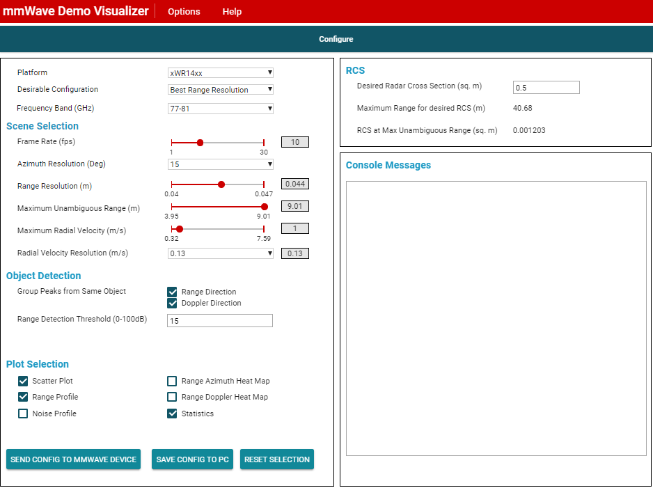
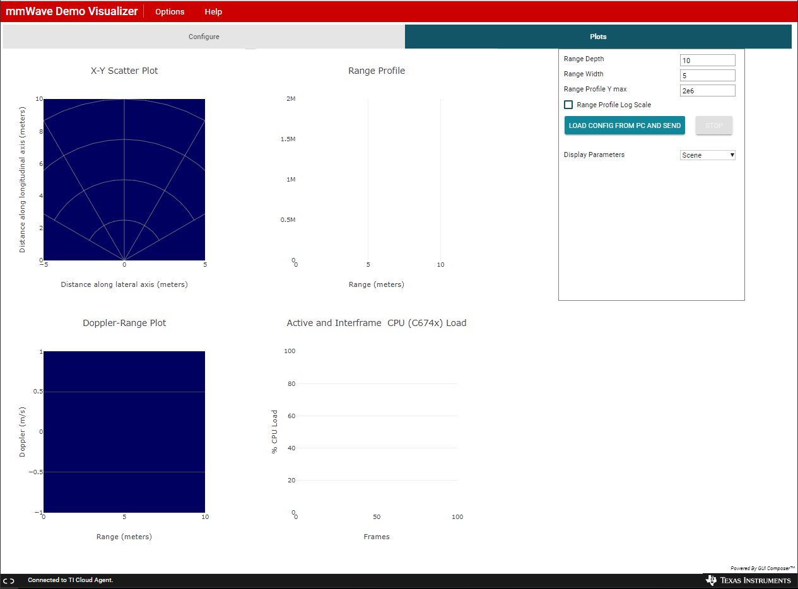
- Download the configuration file: garage_door_cfg.cfg
- Go to the Plots tab on the Visualizer and click the "Load Config From PC and Send" button
- Select the downloaded configuration file "garage_door_cfg.cfg" and press Open
- First, measure the vertical distance of the EVM from the ground.
- With the EVM directly facing the ground (without any target under it), analyze the Range Profile plot in the mmWave Demo Visualizer.
- The detected peak in the Range plot should correspond to the vertical distance to the ground. Let's call this "Distance to Ground".
- Next, measure the vertical distance of the EVM from the top of the target.
- Place the target (car or person) under the mmWave EVM with the highest point of the target directly under the EVM.
- Analyze the Range Profile plot in the mmWave Demo Visualizer and locate the peak corresponding to the top of the target. Let's call this "Distance from EVM".

- Without moving the target, use a measuring tape to measure the vertical distance between the target and the mmWave EVM.
- Determine the Estimated Height as given below:
- Please note that the distance measured by the IWR1443 EVM has a bias of +8 cm (e.g. true height is 1m but the measured height is 1.08 m). This is likey due to a delay in the Front-End of the RF chain, which has not been charecterized yet. This is mentioned in the HTML documentation provided with the SDK demo as shown below.
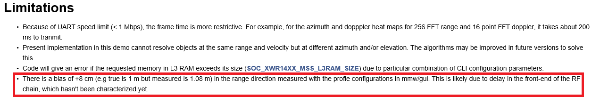 - Estimated Height = Distance to ground - (Distance from EVM - 8cm bias).
- Please note that the distance measured by the IWR1443 EVM has a bias of +8 cm (e.g. true height is 1m but the measured height is 1.08 m). This is likey due to a delay in the Front-End of the RF chain, which has not been charecterized yet. This is mentioned in the HTML documentation provided with the SDK demo as shown below.
Results
The steps presented above were repeated for each target and the heights measured as explained above. The results are summarized in the following table:
| Target | Tape Measure (cm) | EVM Esitmated Height (cm) | Error (cm) | Error % |
|---|---|---|---|---|
| Adult | 174.6 | 178.0 | +3.40 | 1.94 |
2017 Honda Civic SI Sedan | 141.5 | 141.3 | -0.20 | 0.14 |
2017 Mazda 3 Sedan | 145.5 | 149.5 | +3.95 | 2.71 |
| Nissan Murano SUV | 169.2 | 166.0 | -3.20 | 1.89 |
The following table shows the Visualizer plots for the various targets. Please note that the peaks shown in these plots correspond to the Distance between the EVM and the top of the target. The actual height was estimated using the formula presented in the Method section above.
| Target | X-Y Scatter Plot | Range Profile Plot |
|---|---|---|
| Distance to Ground | 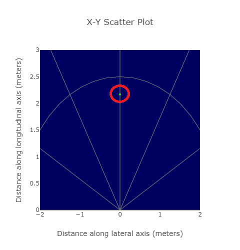 | 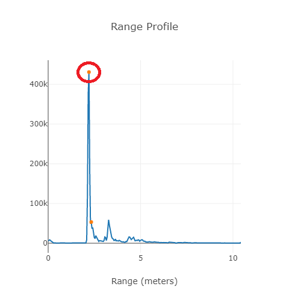 |
Adult | 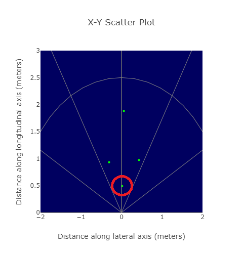 | 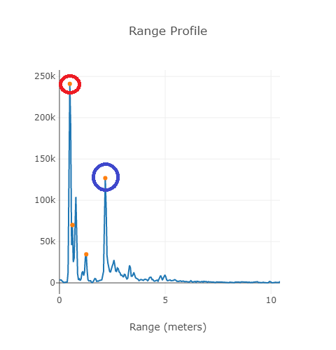 |
Mazda 3 | 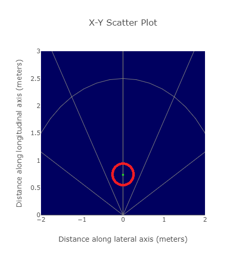 | 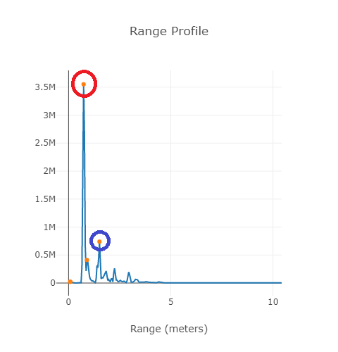 |
| Honda Civic SI | 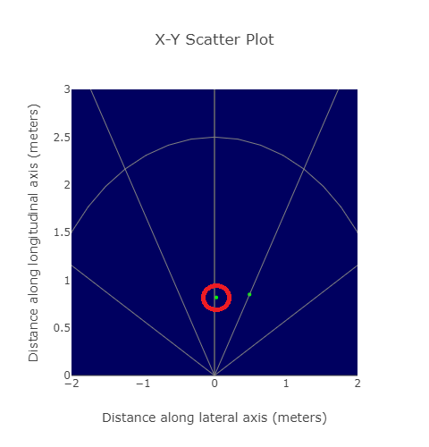 | 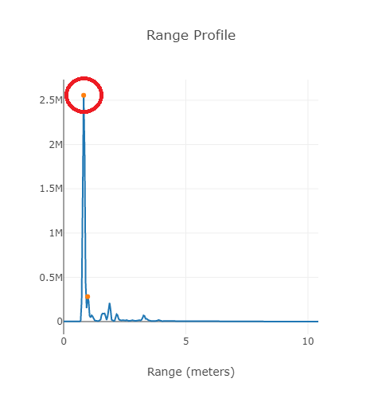 |
| Nissan Murano SUV | 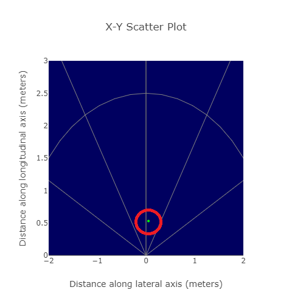 | 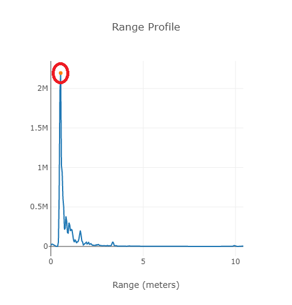 |
Conclusion
Using the IWR1443 SDK Out-of-Box Demo, we were able to successfully measure the height of vehicles and people with a reasonable accuracy.
The intensity of the signal reflected from a person's head is less than that reflected by a car.
- The accuracy of the measurements can be further improved using advanced algorithms. The High Accuracy Range Measurement - 14xx Lab on TI Resource Explorer provides an example implementation of High Accuracy Range Measurement with TI's mmWave Sensors.